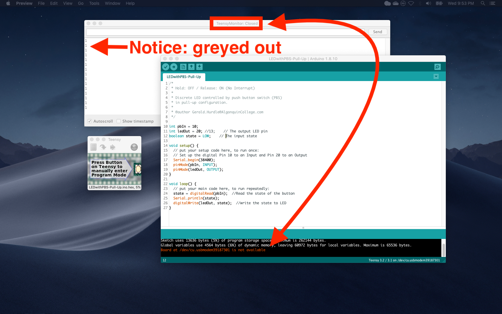
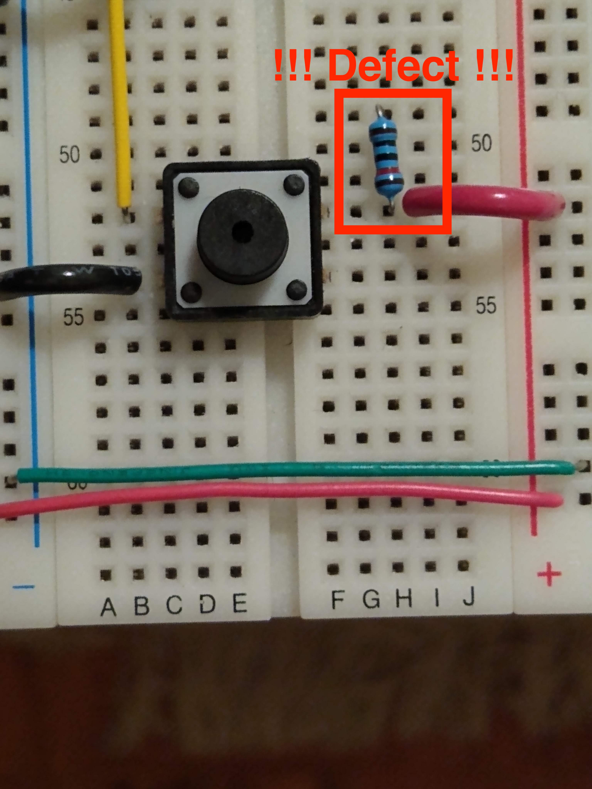

In a previous run of the course (W'20), I presented a series of demos featuring a discrete LED controlled by a push-button switch (PBS) that is configured in one of two ways: pull-down or pull-up. In preparation for demo'ing a pull-up configuration, I moved a jumper wire on the Vcc rail to a terminal on the PBS (or so I thought). The demo went side-ways very quickly (!), and I did not observe the expected behaviour of a pull-up configuration.
Here are my notes on what happened.
The expected behaviour of a PBS in pull-up configuration is described as follows:
When I pressed my PBS, I did not observe this expected behaviour. Rather, I noticed something different: pressing the PBS caused the Serial.Monitor window to "freeze".
Here's a screenshot showing the "frozen" Serial.Monitor dialog window:

From the screenshot, notice the connection between my BYOD device (my MacBookPro) and the Teensy is lost.
During Tuesday's lecture, the Arduino IDE became a run-away process when the Java AWT threw a run-time exception. The reason: Java ran out of heap space. That's when my MacBook Pro's fan turned on in response to an over-heated CPU. At that point, I had to 'force quit' the Arduino IDE process. Note: I wasn't able to re-create the Arduino IDE as a mis-behaved process, so no screenshots --- sorry!
Since I hadn't changed the software (i.e. no changes to the sketch), the issue had to be related to the change I made to the circuit.
This is what I saw:

Notice... the PBS is not protected by the 10k Ohm resistor. The purpose of the resistor is to restrict the amount of current flowing thru the PBS.
When I pressed the PBS, and closed the circuit, too much current flows thru the PBS. The excess current sinks to the Teensy, causing it to drop the USB connection.
As I write this at home, the USB connection does come back after a few seconds. During Tuesday's lecture, I had to 'force quit' the Arduino IDE.
Human error is the reason for the failed demo. I didn't inspect my work after moving the red jumper wire.